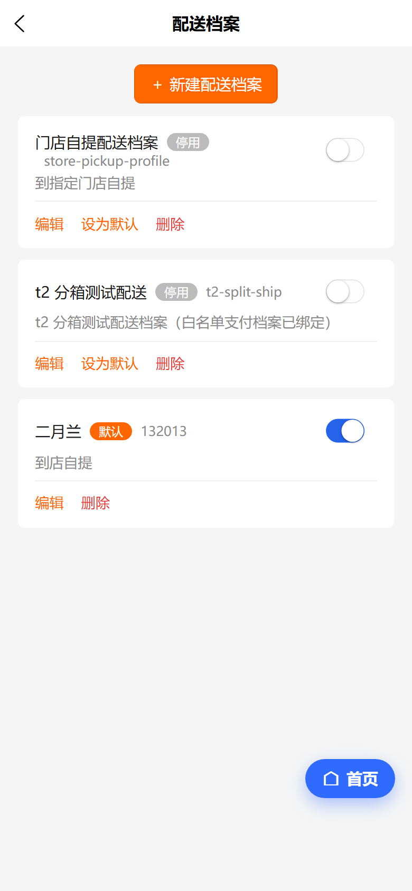
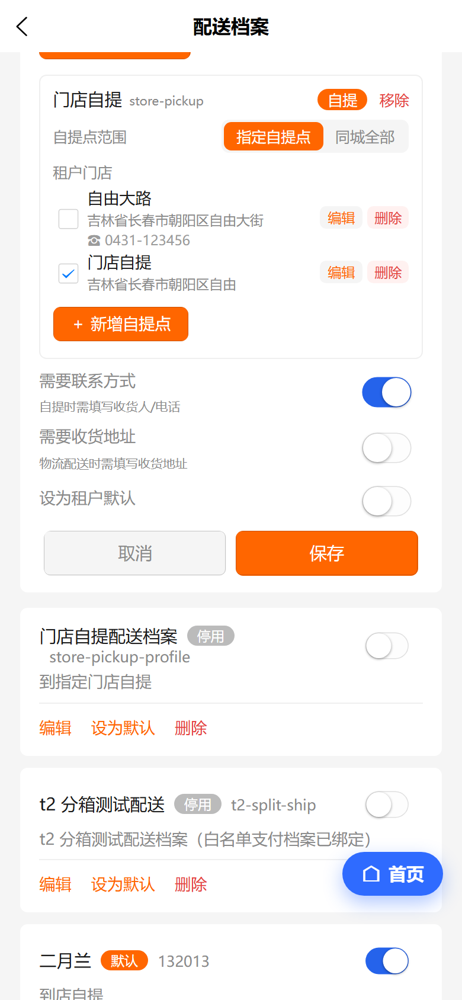
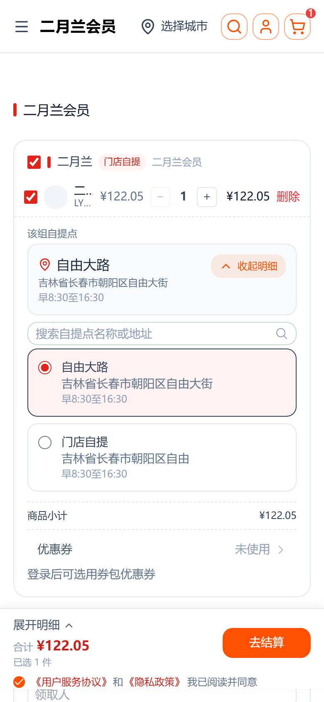
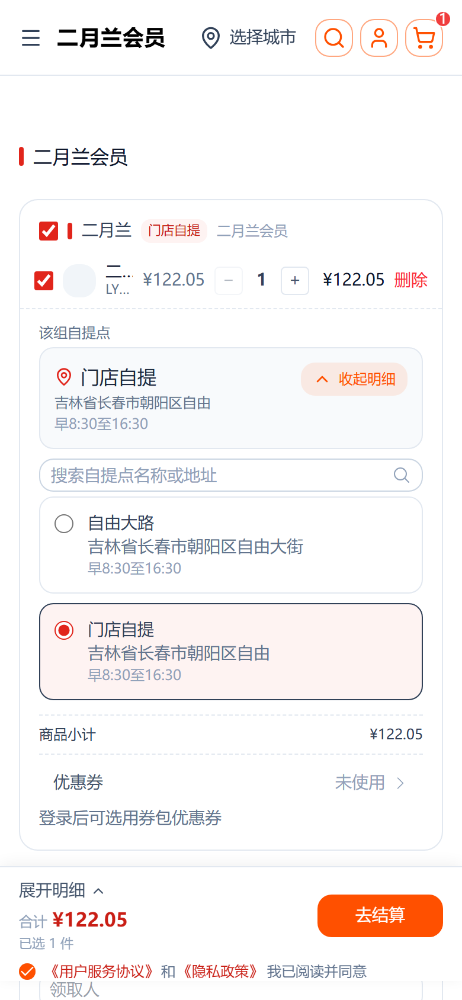

配送档案「自提点」保存修复 ＋ 编辑/删除
＋ 自提单多地提点切换
修复门店自提（store）方式下勾选的自提点保存后不落库的问题；给自提点补上编辑 / 删除按钮；并为二月兰档案真绑 2 个自提点，让结算页出现「选择自提点」切换器。
✓ 通过后台自提点保存修复
✓ 通过自提点 编辑/删除 按钮
✓ 通过C端多地提点切换
✓ 通过超管「全局可用」
一、问题与根因
线上现象（C端）
- 二月兰配送档案下有自提点，但结算页没有「选择自提点」切换按钮，「另一个自提点」也不显示。
- 逐一排查：既非部署缺失（新切换 UI 已在服务器构建产物内），而是箱只返回 1 个自提点——档案#15「二月兰」只绑了「自由大路#4」一个点。
后台保存 bug（真正根因）
配送档案编辑保存时，自提点 ID 只在mode === 'pickup'时才写入 options.pickupLocationIds；而「二月兰门店」是mode='store'（门店自提），被当成非自提 → options 置 null，勾选的门店自提点根本没落库。这就是「在后台加了第 2 个点，C端却始终只看到 1 个」的根因。
// 修复前（web-admin shipping/profile/index.vue onSave）
options: e.mode === 'pickup' ? { rangeMode, pickupLocationIds } : null
// 修复后：门店自提 / 自提点 / 职工单位（store / point / employee）全部持久化
options: isPickupMode(e.mode) ? { rangeMode, pickupLocationIds } : null
后台能力缺失
- 配送档案自提点区域只有勾选与「新增自提点」，每个自提点缺「编辑 / 删除」按钮，不便维护地址与删除。
二、修改内容
| 端 | 改动 | 说明 |
|---|---|---|
| 后台 web-admin | shipping/profile/index.vue onSave | e.mode === 'pickup' → isPickupMode(e.mode)；使 store / point / employee 三种自提方式的 pickupLocationIds 真正落库 |
| 后台 web-admin | 自提点行新增「编辑」「删除」 | 「编辑」跳转自提点编辑页；「删除」（非全局点）弹确认后删除并刷新列表、并从所有方式的已选点中移除 |
| 数据 | 二月兰档案#15 方法级绑点 | 「二月兰门店」方式（#30）pickupLocationIds = ["4","7"]（自由大路 + 门店自提） |
改动文件（全量）
vshop/web-admin/src/pages/shipping/profile/index.vue（保存修复 + 编辑/删除按钮）· 生产数据：updateShippingProfile 方法级绑点（脚本 D:\zhao\scripts\_q_bind_erle_7.mjs）。
C端切换 UI（BoxPickupBlock）本批前已上线，本次无需重建 nshop。
三、验收方法
后台与 C端截图均来自手机标准视口，真实访问/登录链路核验；C端为真实生产链路。
| 端 | 访问路径 | 账号/数据 |
|---|---|---|
| 后台 | e.joho.cn/guanli → 选择店铺 t2 → 配送档案 → 编辑「二月兰」 | superadmin 超管；目标档案#15「二月兰」 |
| C端 | www.youshop.cn/t2/product/lanyue… → 加购 → /checkout | 自提变体49·二月兰（配送档案#15）；箱 pickupLocations 应返回2点 |
四、后台验收（配送档案自提点）
进入 t2 → 配送档案，打开「二月兰」编辑：自提点区域在租户门店分组下同时列出自由大路、门店自提两个点，每点均带「编辑」「删除」；「门店自提」已勾选（本次补绑）。


| 校验点 | 预期 | 实际 | 结果 |
|---|---|---|---|
| 门店自提点显示 | store 方式下显示「租户门店」点列表 | 自由大路 + 门店自提 均列出 | ✓ 通过 |
| 保存能落库 | 勾选的自提点 ID 写入 methodConfigs.options | 保存后 C端箱 pickupLocations 返回2点（见第五节） | ✓ 通过 |
| 编辑按钮 | 每点提供「编辑」跳自提点编辑页 | 自由大路、门店自提右侧均有橙色「编辑」 | ✓ 通过 |
| 删除按钮 | 每点提供「删除」（非全局点） | 两自提点右侧均有红色「删除」 | ✓ 通过 |
五、C端验收（多地提点切换）
二月兰箱现返回2 个自提点，结算页自提点从「单选概览」升级为「当前点概览 + 选择自提点」展开切换器（搜索 + 单选）。


| 校验点 | 预期 | 实际 | 结果 |
|---|---|---|---|
| 箱返回多自提点 | orderBoxes.pickupLocations > 1 | 返回 [自由大路#4, 门店自提#7] | ✓ 通过 |
| 出现切换按钮 | 仅当自提点 > 1 显示 | 概览卡右上出现「选择自提点」 | ✓ 通过 |
| 展开选择器 | 搜索 + 单选列表 | 搜索框 + 自由大路/门店自提 两卡片 | ✓ 通过 |
| 切换即更新 | 选另一自提点后概览跟随 | 选门店自提 → 概览卡切至门店自提 | ✓ 通过 |
六、验收结论
验收通过
后台配送档案自提点保存修复生效（store/point/employee 方式的自提点 ID 会真正写入 methodConfigs.options.pickupLocationIds）；每个自提点新增编辑 / 删除按钮；二月兰档案补绑第 2 个门店自提点后，C端与后台均已部署、在线回归通过。
验收后数据状态（供复核）
生产「二月兰」档案#15 现绑定 2 点：自由大路#4（档案级）＋ 门店自提#7（方法级）。如需还原为仅自由大路：node D:\zhao\scripts\_q_bind_erle_7.mjs off。
交付记录
| 条目 | 值 |
|---|---|
| 后台改动 | vshop/web-admin/src/pages/shipping/profile/index.vue（保存修复 + 自提点 编辑/删除） |
| 后台部署 | 本地 node web-admin/scripts/deploy.mjs（build:h5 → scp → nginx reload），产物 pages-shipping-profile-index.DhRR1T_e.js 已含新标记 |
| 数据 | updateShippingProfile 二月兰#15 方式#30 pickupLocationIds=["4","7"] |
| 验证环境 | 后台 e.joho.cn/guanli（t2）＋ C端 www.youshop.cn/t2，均 390×844 (dpr=2) 手机视口 |
七、自提点「全局可用」开关（超级管理员）
后台「配送档案 → 自提点 → 新增自提点」时，超级管理员可在表单里看到一个「全局可用」开关；勾选后新建的自提点为全局自提点，全平台各租户可经「引用到本店」选用，不归属于单一租户。
现象
旧版新增自提点表单没有「全局可用」开关，超管也无法直接创建全局自提点——前端表单缺 isPublic 字段，createPickupLocation 请求未把 isPublic 传给后端，因此即使后端已具备全局自提点能力，前端也永远建不出全局点。
修复
- 表单新增 isPublic 字段，在「启用」下方以「全局可用」开关展示；仅当 auth.isSuperAdmin 时渲染，普通租户管理员不显示，避免越权误配。
- 保存时把 isPublic 随 payload 提交给 createPickupLocation / updatePickupLocation；后端 pickup-location.service.create 仍按 SetGlobalPickupLocation 权限二次鉴权，双重保险。
- 开关文案：「全局自提点全平台租户可选用（『引用到本店』），仅超级管理员可维护」。

验收（生产 e.joho.cn，手机 390×844）
superadmin 登录 → 选择店铺 → 配送档案 → 自提点管理 →「＋新增自提点」：编辑页表单完整加载，「全局可用」开关正常显示于「启用」下方，无 PAGEERROR。验证脚本 web-admin/_e2e/verify_superadmin_global_btn.py。
| 条目 | 值 |
|---|---|
| 前端改动 | vshop/web-admin/src/pages/pickup/edit/index.vue（模板 + form + onSave payload，复用既有 isSuperAdmin 判定） |
| 后端 | 无需改动（cjk-plugin schema/service/实体 均已含 isPublic） |
| 部署 | 本地 node web-admin/scripts/deploy.mjs（build:h5 → scp → nginx reload） |
| 验证环境 | 后台 e.joho.cn/guanli，390×844 (dpr=2) 手机视口；提交 0bd79b4 |